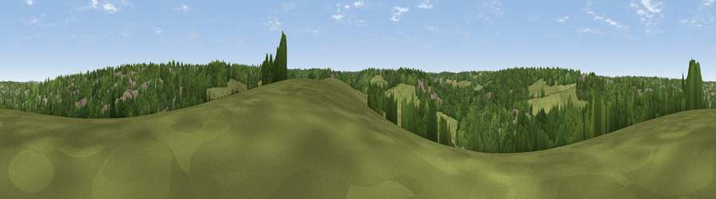

Viewpoint near Old Coulsdon
#44669 in England · top 77% of its area beats it · near Old CoulsdonWhere it is
The exact computed spot (TQ 29925 58175). Click the marker for map links.
The view, rendered

A 360° render of this exact spot computed from the terrain model, tree cover and land cover — summer colours, afternoon light, calibrated against photographs of famous viewpoints. Real trees, hedges and buildings will differ in detail.
The panorama
Grey silhouette: terrain skyline in each direction (720 bearings, Earth curvature and refraction included). Dashed green: skyline with trees (+15 m) and buildings (+8 m) as obstacles. Blue strip: how far the ground is visible on each bearing.
Where the view opens
Wedge length = distance to the farthest visible ground on that bearing (vegetation-aware). Rings at 10, 25 and 50 km.
What fills the view
53% woodland · 30% grassland · 15% built-up · 2% cropland
Angular shares of the visible panorama (visual magnitude), not map area. Landscape diversity 0.46 (0–1 Shannon).
Key numbers
More beautiful places nearby
The staircase of upgrades: each row has a higher view potential than everything closer. Driving times are estimates from straight-line distance, calibrated against real road routing — check an actual route before setting out.
| Place | Direction | Drive | Score |
|---|---|---|---|
| Viewpoint near Chaldon | SE · 2 km | ~5 min | 16.8 |
| Viewpoint near Old Coulsdon | NE · 2 km | ~6 min | 17.4 |
| Viewpoint near Chaldon | SSE · 5 km | ~11 min | 60.2 |
| Viewpoint near Lower Kingswood | SW · 9 km | ~17 min | 67.7 |
| Viewpoint near Coldharbour | SW · 21 km | ~36 min | 70.0 |
| Wolstonbury Hill | S · 44 km | ~64 min | 79.6 |
| Viewpoint near Westmeston | S · 45 km | ~65 min | 81.1 |
| Ditchling Beacon | S · 45 km | ~66 min | 81.8 |
51.30787, -0.13742 · source: screening · position refined by local search. Computed location — check access rights before visiting.